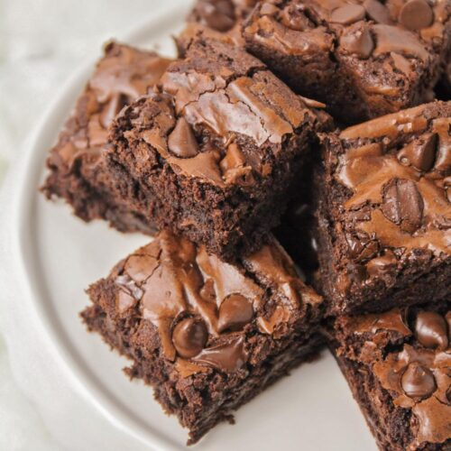

Brownies

A stack of the finest, gooiest brownies, filled with chocolate chips.
A recipe that yields some of the most delicious treats you can make, a good
brownie is gooey in the
centre and flaky on the top. Brownies can be difficult
to get right, but this recipe will teach you how
to make the perfect brownies.
Difficulty: Medium
Serves: 16
Preperation Time: 25 minutes
Cooking Time: 30 minutes
Ingredients:
- 185g unsalted butter
- 185g high-quality dark chocolate
- 50g white chocolate
- 50g milk chocolate
- 275g golden caster sugar
- 85g plain flour
- 40g cocoa powder
- 3 large eggs
Method:
-
Cut the unsalted butter into small cubes and break the dark chocolate into small
pieces and place them
both in a medium bowl.
-
Fill a small saucepan about a quarter full with hot water, then sit the bowl on top
so it rests on the rim
of the pan, not touching the water. Put over a low heat until
the butter and chocolate have
melted, stirring occasionally to mix them.
-
Remove the bowl from the pan. Alternatively, cover the bowl loosely with cling film
and put in the
microwave for 2 minutes on High. Leave the melted mixture to cool to
room temperature. While you
wait for the chocolate to cool, position a shelf in the
middle of your oven and pre-heat the oven to
180C for fan ovens, otherwise 160C/Gas
Mark 4.
-
Using a shallow 20cm square tin, cut out a square of kitchen foil (or non-stick
baking parchment) to
line the base. Tip 85g plain flour and 40g cocoa powder into a
sieve held over a medium bowl. Tap and
shake the sieve so they run through together
and you get rid of any lumps.
-
Chop 50g white chocolate and 50g milk chocolate into chunks on a board.
-
Break 3 large eggs into a large bowl and tip in 275g golden caster sugar. With an
electric mixer on
maximum speed, whisk the eggs and sugar. They will look thick and
creamy, like a milk shake. This
can take 3-8 minutes, depending on how powerful your
mixer is. You’ll know it’s ready when the
mixture becomes really pale and about double
its original volume. Another check is to turn off the
mixer, lift out the beaters and
wiggle them from side to side. If the mixture that runs off the beaters
leaves a trail
on the surface of the mixture in the bowl for a second or two, you’re there.
-
Pour the cooled chocolate mixture over the eggy mousse, then gently fold together with
a rubber
spatula. Plunge the spatula in at one side, take it underneath and bring it up
the opposite side and in
again at the middle. Continue going under and over in a figure
of eight, moving the bowl round after
each folding so you can get at it from all sides,
until the two mixtures are one and the colour is a mottled
dark brown. The idea is to
marry them without knocking out the air, so be as gentle and slow as you like.
-
Hold the sieve over the bowl of eggy chocolate mixture and resift the cocoa and flour
mixture, shaking
the sieve from side to side, to cover the top evenly.
-
Gently fold in this powder using the same figure of eight action as before. The mixture
will look dry and
dusty at first, and a bit unpromising, but if you keep going very gently
and patiently, it will end up looking
gungy and fudgy. Stop just before you feel you
should, as you don’t want to overdo this mixing.
-
Finally, stir in the white and milk chocolate chunks until they’re dotted throughout.
-
Pour the mixture into the prepared tin, scraping every bit out of the bowl with the spatula.
Gently ease the
mixture into the corners of the tin and paddle the spatula from side to side
across the top to level it.
-
Put in the oven and set your timer for 25 mins. When the buzzer goes, open the oven, pull
the shelf out a
bit and gently shake the tin. If the brownie wobbles in the middle, it’s
not quite done, so slide it back in
and bake for another 5 minutes until the top has a shiny,
papery crust and the sides are just beginning to
come away from the tin. Take out of the oven.
-
Leave the whole thing in the tin until completely cold, then, if you’re using the brownie tin,
lift up the
protruding rim slightly and slide the uncut brownie out on its base. If you’re
using a normal tin, lift out the
brownie with the foil (or parchment). Cut into quarters, then
cut each quarter into four squares and finally
into triangles.
They’ll keep in an airtight container for a good two weeks and in the freezer for up to a month.
Return Home